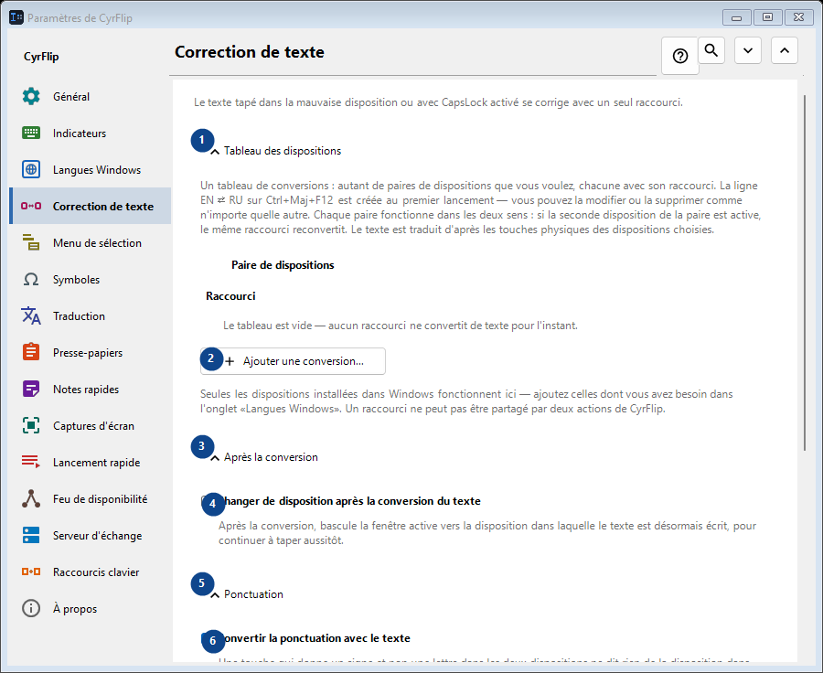
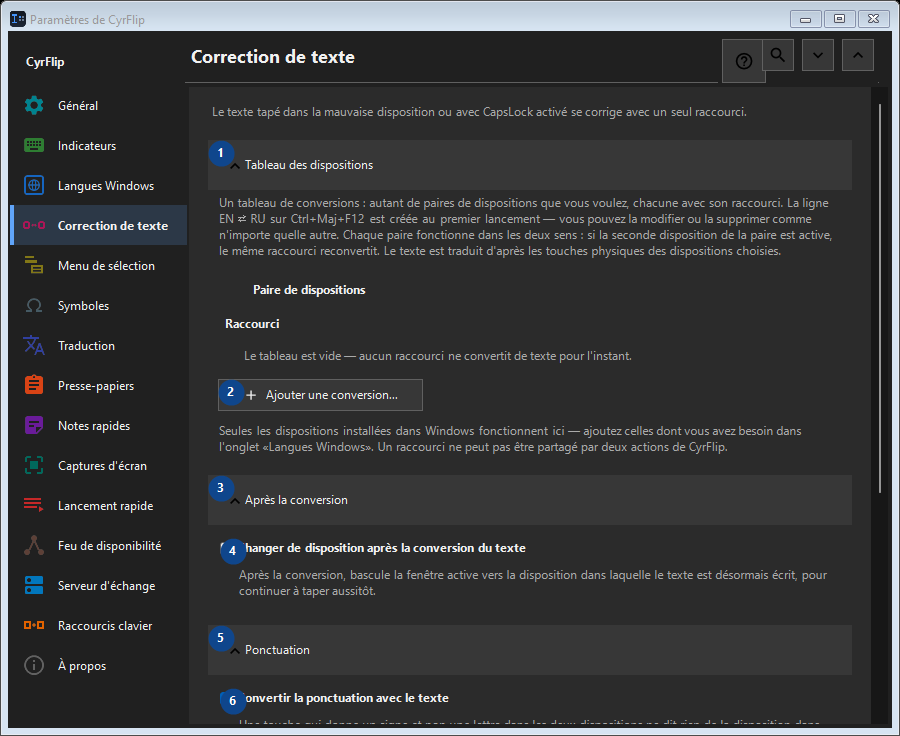

Correction de texte
À quoi cela sert
Le texte tapé dans la mauvaise disposition ou avec CapsLock activé se corrige avec un seul raccourci.


Ordre des actions
Les réglages s’appliquent immédiatement. Aucun ordre n’est imposé ; utilisez les groupes ci-dessous.
Éléments
1. Tableau des dispositions
Utilisez cette commande pour l’action indiquée. Lisez toute confirmation avant de l’accepter.
Vos raccourcis2. Ajouter une conversion...
Utilisez cette commande pour l’action indiquée. Lisez toute confirmation avant de l’accepter.
Vos raccourcis3. Après la conversion
Utilisez cette commande pour l’action indiquée. Lisez toute confirmation avant de l’accepter.
Vos raccourcis4. Changer de disposition après la conversion du texte
Après la conversion, bascule la fenêtre active vers la disposition dans laquelle le texte est désormais écrit, pour continuer à taper aussitôt.
Vos raccourcis5. Ponctuation
Utilisez cette commande pour l’action indiquée. Lisez toute confirmation avant de l’accepter.
Vos raccourcis6. Convertir la ponctuation avec le texte
Une touche qui donne un signe et non une lettre dans les deux dispositions ne dit rien de la disposition dans laquelle elle a été frappée : derrière «/» la touche russe porte un point, et le «/» du pavé numérique est le même partout et, dans le texte copié, ne se distingue pas de l''autre. Tant que la case est cochée, ces signes sont convertis avec le texte - c''est ainsi que CyrFlip s''est toujours comporté. Décochez-la si vous les tapez délibérément plus souvent : «/ghbdtn» gardera alors sa barre au lieu de commencer par un point. Les signes dont la touche porte une lettre dans l''autre disposition (la virgule, les crochets) sont convertis dans tous les cas.
Vos raccourcis7. Casse
Utilisez cette commande pour l’action indiquée. Lisez toute confirmation avant de l’accepter.
Vos raccourcis8. Corriger Verr. Maj.
Inverse majuscules et minuscules dans la sélection ; utile après un Verr. Maj. activé par mégarde.
Vos raccourcis9. Modifier - Corriger Verr. Maj.
Utilisez cette commande pour l’action indiquée. Lisez toute confirmation avant de l’accepter.
Vos raccourcis10. Synchroniser Verr. Maj. après la correction de la casse
Modifie l'état physique de Verr. Maj. après la correction, afin que les frappes suivantes correspondent au texte corrigé.
Vos raccourcis